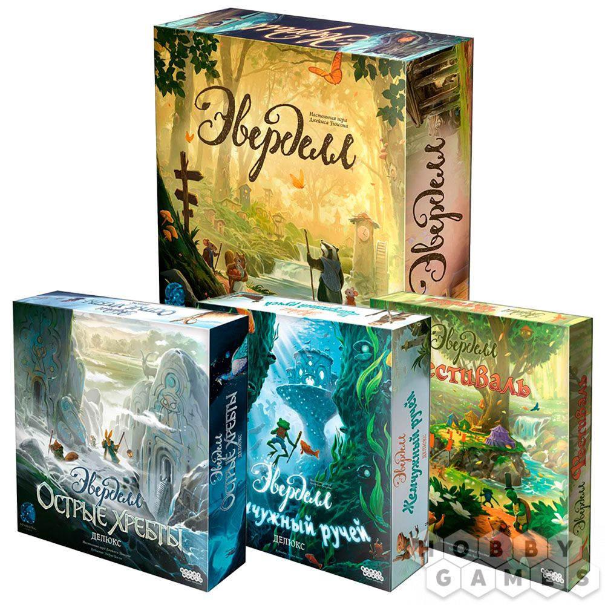

Набор игр "Волшебная долина"

"Эверделл" – это волшебная настольная игра для 1-4 игроков и само воплощение тепла и уюта. Действие игры происходит в сказочном мире, где животные разговаривают и дружно живут вместе в лесных городах. Прежде всего, игра удивит Вас своим очаровательным дизайном игрового поля и компонентов, в которых используются мягкие и приятные цвета. Во главе игрового поля стоит настоящее дерево, которое нужно будет собрать по инструкции из картонных элементов. Дерево не просто выполняет декоративную функцию – на его ветвях располагаются карты и фигурки.
Купить
- "Эверделл"
- "Эверделл: Жемчужный ручей. Делюкс"
- "Эверделл: Фестиваль"
- "Эверделл: Острые хребты. Делюкс"
Как играть
Вся партия длится четыре сезона, за которые вы должны будете успеть подготовить свой город. Игроки ходят по очереди могут совершать различные действия, но только одно за раз:
Поставить работника – позволяет получать ресурсы.
Разыграть карту – на своё поле разыгрывается карта за определённую цену. Взамен вы можете получить различное преимущество.
Подготовиться к сезону – игрок переходит в следующий раунд-сезон, при этом игроки не ждут друг друга и могут продолжать игру в удобном им темпе, придерживаясь своей стратегии. Когда именно переходить дальше, зависит только от вас, но помните, что в конце четвёртого сезона игра для вас заканчивается.
Кто победил?
Партия для игрока завершается в тот момент, когда он не может или не хочет совершать новое действие. Участие в партии он больше не принимает, а только следит за оставшимися игроками. В конце концов все игроки заканчивают и подсчитывают свои очки. Победитель получает победную карту Эверделла!